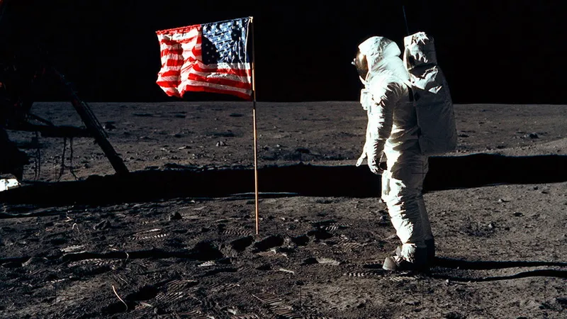
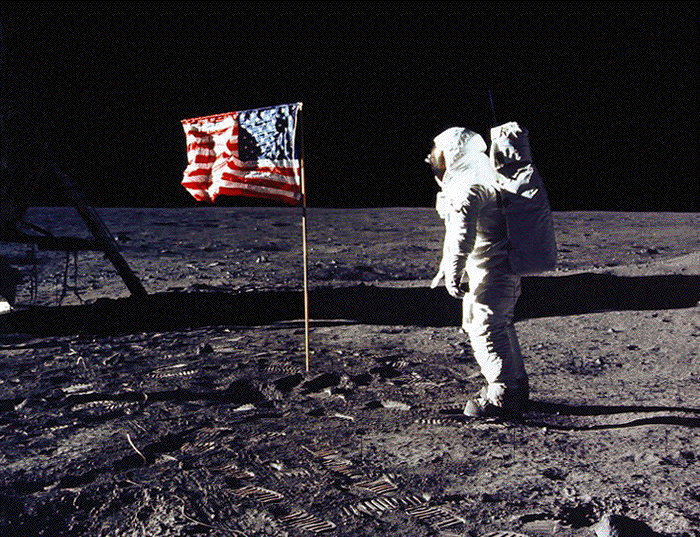
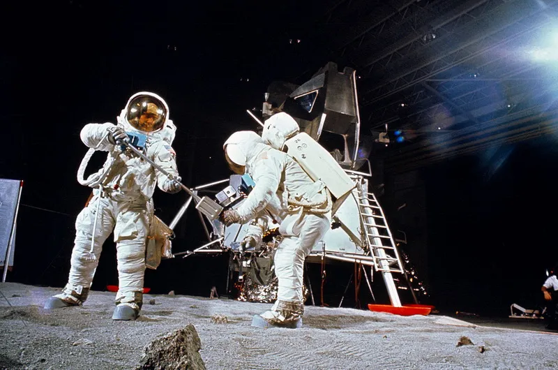
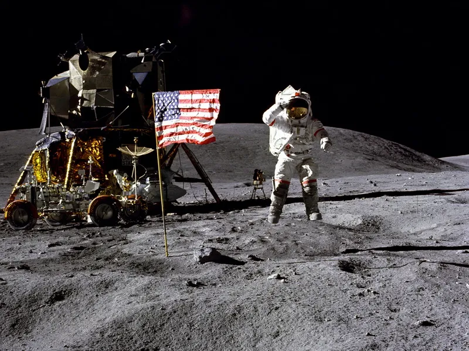

Kenapa Mayoritas Orang Rusia Tak Percaya Astronaut Amerika Mendarat di Bulan?
“Satu langkah kecil untuk manusia, satu lompatan raksasa untuk umat manusia,” kata Neil Armstrong setengah abad lalu saat menapakkan kaki di Bulan. Peristiwa itu menandai dimulainya era baru dalam sejarah umat manusia. Untuk pertama kalinya, manusia mendarat di benda langit lain. Itu terjadi pada 1969..
Dewasa ini, kita memimpikan misi pendaratan Mars, dan membaca bocoran konferensi Mars yang diam-diam diadakan oleh Elon Musk. Namun, tahukah Anda? Puluhan tahun sejak pendaratan Neil Armstrong, banyak orang Rusia masih tidak percaya pada “langkah kecil” yang diambil sang astronaut di Bulan. Apa yang disebut ‘konspirasi Bulan’ memang muncul di AS, tetapi tidak ada negara lain di dunia yang secara penuh menganut teori konspirasi ini seperti Rusia. Banyak orang Rusia percaya bahwa pemerintah AS melakukan tipuan yang rumit, dan bahwa pendaratan di Bulan sebenarnya (diduga) difilmkan di Hollywood. Saat ini, mitos ini TIDAK dipercaya oleh — persiapkan diri Anda — hanya 24 persen orang Rusia!

Hoaks 1990-an Sebetulnya, tingkat kepercayaan orang Rusia terhadap pencapain antariksa AS tersebut tak serendah ini dari awal. Ketika peristiwa itu terjadi pada 1969, tak ada seorang pun, baik pejabat maupun media di Uni Soviet, yang meragukan pencapaian astronaut Amerika.
“Ketika kami menerima sinyal dari Bulan, kami menerimanya dari Bulan, bukan dari Hollywood,” kata kosmonaut Rusia Georgy Grechko, seorang anggota misi Bulan Soviet, yang dibatalkan setelah Apollo 8 untuk pertama kalinya mengorbit Bulan. Pada saat itu, semua sistem pengintaian Soviet sedang menyaksikan penerbangan berawak pertama ke Bulan. Peralatan radio Soviet menerima sinyal dari Apollo 11, serta semua komunikasi audio dan rekaman TV pendaratan itu sendiri.

“Membuat tipuan seperti itu mungkin sama sulitnya dengan menjalankan misi yang sebenarnya, ” kata seorang kosmonaut dan perancang pesawat ruang angkasa lainnya, Konstantin Feoktistov, menyimpulkan dalam bukunya, The Trajectory of Life. Pertama-tama, stasiun televisi perlu dibawa terlebih dahulu ke Bulan, baru kemudian responder dikirimkan ke Apollo 11. Setelah itu, lusinan pabrik palsu yang membangun pesawat ruang angkasa dibuat. Kemudian, merekayasa kembalinya pesawat ke Bumi …. Itu semua terlalu rumit, bahkan untuk kompetisi antariksa antara kedua negara adidaya.
Namun pada akhir 1990-an, ‘konspirasi Bulan’ yang terkenal di dunia mencapai Rusia dan berhasil menarik banyak pengikut. Orang-orang sezaman menghubungkannya dengan fakta bahwa Rusia yang baru dan rapuh sangat membutuhkan konsep pseudo-patriotik (mendukung negara sendiri), seperti gagasan bahwa Amerika telah menipu semua orang, termasuk Uni Soviet, yang selalu menjadi yang pertama dalam segala hal. Ini adalah alasan lain mengapa ‘konspirasi Bulan’ masih berlaku di antara banyak orang Rusia.
‘Kebohongan Besar Amerika’ Kepercayaan orang Rusia terhadap teori konspirasi ini berasal dari penerbitan buku Yury Mukhin, Anti-Apollo: Lunar Scam of the USA. Sang penulis mengklaim bahwa uang yang dialokasikan untuk program Bulan diduga dicuri, sedangkan adegan pendaratan di Bulan diambil oleh Stanley Kubrick, sutradara di balik film kultus, 2001: A Space Odyssey. Selain itu, menurut Mukhin, beberapa komunis dan ilmuwan Soviet menjadi bagian dari konspirasi, demi keuntungan tertentu, tentu saja.
Namun, ‘kebohongan besar Amerika’ tidak akan memperoleh banyak uang di Rusia seandainya tidak mendapat dukungan dari orang-orang yang lebih memiliki reputasi baik dan media.

Jurnalis Aleksandr Gordon membuat dua film dokumenter tentang ‘konspirasi Bulan’. Pada 2007, jurnal ilmiah Topical Problem of Modern Science menerbitkan sebuah artikel yang ‘membuktikan’ bahwa dengan kecepatan roket AS kala itu, Neil Armstrong tidak mungkin mencapai Bulan. Pada 2018, Dmitry Rogozin, kepala badan antariksa Rusia, Roscosmos, mengumumkan bahwa Rusia sedang mempersiapkan misi Bulan dengan tujuan, antara lain, sebagai berikut: “Kami telah menetapkan misi untuk terbang ke sana, untuk memeriksa apakah mereka (orang Amerika) pernah ke sana atau tidak .... Mereka bilang pernah ke sana, kami akan memeriksa."
Semua ini terjadi terlepas dari kenyataan bahwa Akademi Ilmu Pengetahuan Rusia secara resmi mengutuk ‘'konspirasi Bulan’ sebagai pseudosains, dan Presiden Rusia Vladimir Putin sendiri menyebutnya sebagai “omong kosong”.
Pertunjukan Terus Berlanjut Dilihat oleh jajak pendapat, 65 persen orang yang percaya bahwa pendaratan di Bulan pada 1969 tidak pernah terjadi hanya memiliki pendidikan hingga tingkat sekolah menengah. Yang menarik, keinginan untuk membangun ‘kebenaran’ jauh melampaui rasa ingin tahu yang biasa: beberapa orang Rusia bahkan siap untuk menyumbangkan uang mereka sendiri untuk tujuan itu.
Pada 2015, pengumpulan sumbangan dimulai pada platform pengumpulan dana, Boomstarter, untuk membangun satelit mikro dengan kamera demi memverifikasi situs pendaratan Apollo 11. Kampanye itu diluncurkan oleh seorang blogger penggila ruang angkasa. Targetnya adalah 800 ribu rubel ($12 ribu), tetapi jumlah aktual yang terkumpul dua kali lebih besar.
Siapakah orang-orang ini? Beberapa adalah mereka yang masih mengambil bagian dalam diskusi tanpa akhir di forum teori konspirasi online — percayalah, jumlahnya sangat banyak, dan mereka yang menulis komentar seperti ini: “Jika Anda berpikir orang Amerika adalah penipu, saya setuju .... Ada banyak bukti untuk ini. Misalnya, ada yang salah dengan jejak kaki (mungkin, Armstrong), atau bendera tidak berkibar sebagaimana mestinya, dan sebagainya. Misalnya, video Amerika Rammstein adalah bukti, atau permainan GTA Vice City — ada film yang dibuat di sebuah pulau di suatu tempat dan di sana, di gedung berkubah, ada batu bulan buatan, dan kabarnya di sinilah mereka merekam pendaratan di Bulan.”
Source